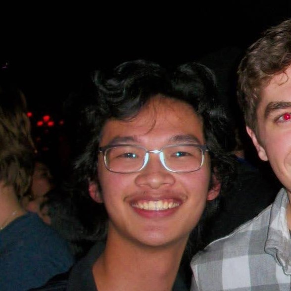

About Me
Jacob is a 2nd year Physics and Computer Science double major. He's from New Jersey, but he went to school in New York City (which is much cooler to tell people). In high school, he was part of the Christian Service Club, where he prepared sandwiches for local homeless shelters and tutored children in low-income neighborhoods. Some of his hobbies include taekwondo, playing guitar, and drawing.